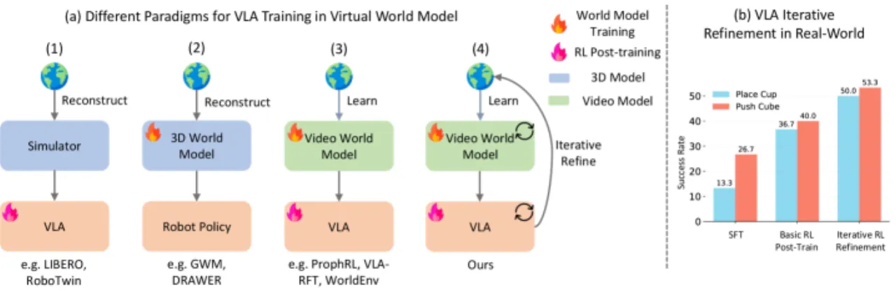
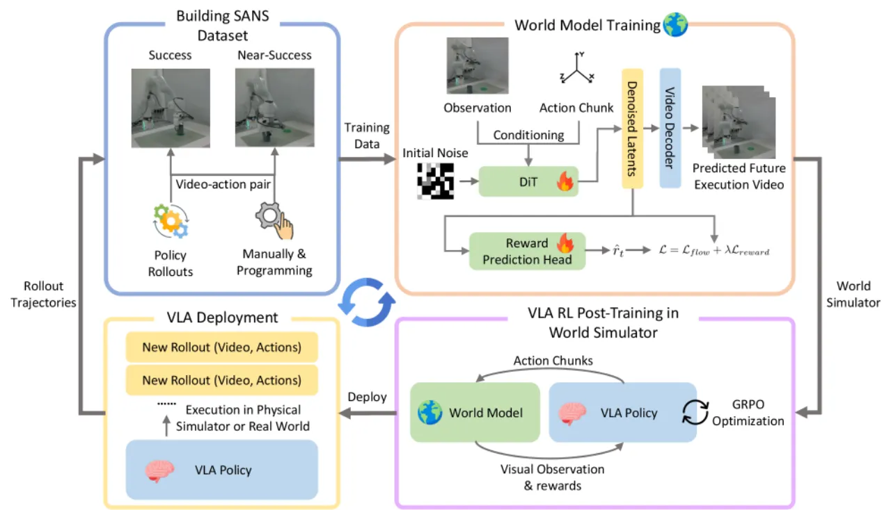
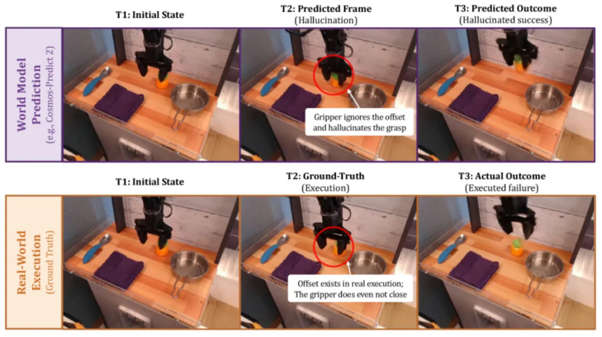
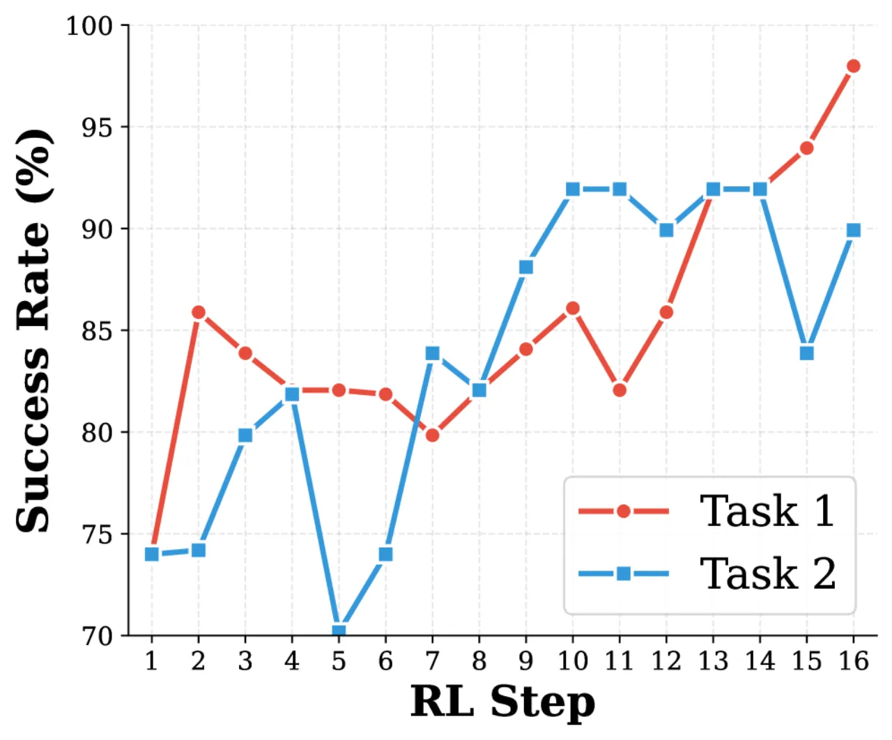
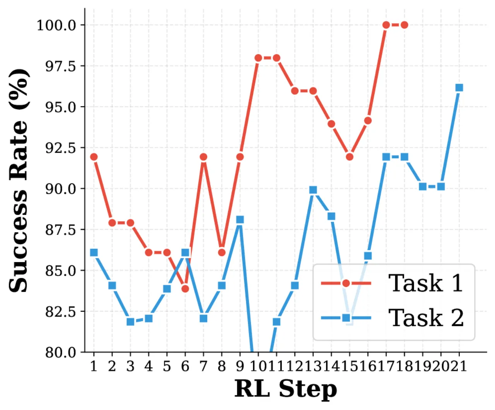

物理机器人强化学习代价高昂，而现有视频世界模型作为虚拟环境时存在两大缺陷：对细粒度动作不敏感（尤其在"近成功"失败情形下大量幻觉成功），以及缺乏原生奖励信号。 本文提出 World-VLA-Loop，将 Success And Near-Success（SANS）数据集、状态感知奖励头、GRPO 策略优化以及迭代闭环增广四个模块整合为统一框架，策略与世界模型互相促进，持续提升。
在真实物理环境中对VLA（Vision-Language-Action）策略进行强化学习，需要大量机器人交互，代价极高且存在安全风险。 视频世界模型作为虚拟环境是一条有吸引力的替代路径，但现有方案存在两个关键瓶颈，导致实际效果受限。
当机器人动作存在微小误差（"近成功"情形，例如差一点就能抓到物体）时，现有视频世界模型 "frequently hallucinate successful outcomes even under erroneous actions, reflecting weak grounding in fine-grained physical dynamics"（论文原话）。 这意味着用于RL训练的虚拟rollout质量低，导致策略无法从失败中学习。
奖励需要通过另一个模块（如VLM）从生成的视频帧中提取。由于视频质量本身就存在幻觉， 计算出来的奖励信号不可靠，策略优化方向失真。 此外，随着VLA策略在RL训练中不断改进，其失败模式也随之改变，固定的世界模型无法跟上，造成分布偏移。
"Current video generation-based world models, when used as RL environments for VLA policies, struggle with two critical limitations: imprecise action-following, especially in near-success failure cases, and the absence of a reliable native reward signal."

World-VLA-Loop 由四个相互配合的模块构成：SANS 数据集构建 → 状态感知视频世界模型训练 → VLA策略GRPO强化学习 → 迭代闭环数据增广。 四个模块首尾相接，形成闭环：策略进化产生新的rollout数据，新数据再次微调世界模型，从而实现"策略—世界模型"的持续共同进化。

传统数据集只保留成功轨迹，导致世界模型看不到"差一点就失败"的细粒度物理动态。 SANS 数据集刻意混入"近成功"失败轨迹——即"the robot fails to achieve a specific goal due to minor action errors"—— 迫使模型"focus on fine-grained nuances in spatial dynamics"。 在 ManiSkill 预训练阶段收集 35k 视频-动作对；在任务特定阶段，每个任务收集约 50 条成功轨迹和 50 条近成功失败轨迹。

以 Cosmos-Predict 2 为基础，输入观测帧序列和机器人动作（6-DoF 末端执行器位姿 + 夹爪状态）， 自回归预测未来帧。关键创新是在扩散 Transformer 中增加奖励预测头（reward prediction head）， 直接作用于扩散隐变量而非后处理步骤。联合训练损失为：
ℒ = ℒ_flow + λ · Σᵢ₌₁ᵀ ‖r̂ₜ − rₜ‖²
联合训练带来双重好处：（1）奖励与视觉结果自然对齐；（2）生成器受奖励监督约束，被迫 "better distinguish successful versus failed execution outcomes under different action conditions"。 对比实验显示，集成奖励头的准确率（88–94%）优于独立VLM奖励（Qwen3-VL，84–93.9%），且推理效率更高。
以 OpenVLA-OFT 为基础策略，世界模型作为虚拟环境提供多步观测和二值奖励信号。 对步骤级奖励设阈值，转化为任务成功信号，驱动 GRPO 优化。 chunk size 统一设为 24 帧。
每轮 RL 训练后，将改进策略在真实机器人上产生的新成功和近成功 rollout 追加至 SANS 数据集， 再次微调世界模型，进入下一轮迭代，实现 "a comprehensive, iterative joint-optimization framework for both the world model and the VLA policy"。
在仿真（LIBERO benchmark：Object / Goal / Spatial 三个任务套件）和真实机器人（Franka 机械臂 + RealSense D435）上进行评估。 基线为 OpenVLA-OFT SFT（监督微调版）；上界为在 LIBERO 物理仿真器中进行 RL 的 Oracle 系统。
| 指标 | 数值 | 说明 |
|---|---|---|
| SSIM | 0.91 | 结构相似度 |
| PSNR | 28.09 | 峰值信噪比 (dB) |
| LPIPS | 0.045 | 感知相似度（越低越好） |
| Visual Outcome Alignment | 90% | 视觉结果与真实一致率（平均） |
| Reward Accuracy | 87.25% | 奖励预测准确率（平均） |
| 任务 | OpenVLA-OFT SFT（基线） | World-VLA-Loop（本文） | 提升 |
|---|---|---|---|
| LIBERO-Object-1 | ~73.9% | ~97.9% | +24.0% |
| LIBERO-Goal-1 | ~87.6% | ~95.7% | +8.1% |
| LIBERO-Spatial-1 | ~86.9% | ~96.9% | +10.0% |
| LIBERO Oracle（上界参考） | ~98.5%（在真实物理仿真器RL） | — | |
| 任务 | OpenVLA-OFT SFT（基线） | World-VLA-Loop（本文） | 提升 |
|---|---|---|---|
| Pick and Place Cup | 13.3% | 36.7% | +23.4% |
| Pushing Cube | 26.7% | 40.0% | +13.3% |


论文明确指出："Severe quality degradation typically occurs only after the 300-frame mark"， 因此 LIBERO-100 等需要 400+ 帧的长时域任务在当前框架下无法支持。 自回归视频模型存在"limited context memory and quality drift"的固有缺陷，是该限制的根本原因。
目前使用的是稀疏终态奖励（任务最终是否成功），而非步骤级中间子目标奖励。 作者指出未来需要"transitioning from sparse final-state rewards to step-wise intermediate sub-goals for improved RL convergence"。
当前基于 Cosmos-Predict 2 的视频模型在帧数超过阈值后存在质量漂移（quality drift）。 作者指出需要"exploring video backbones with enhanced long-term stability"和 更新的自回归视频生成技术来突破 300 帧限制，以支持更复杂的操作任务。